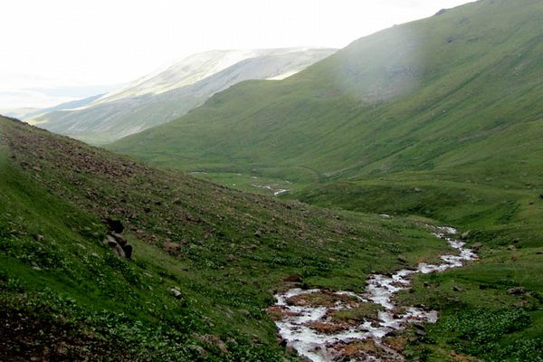
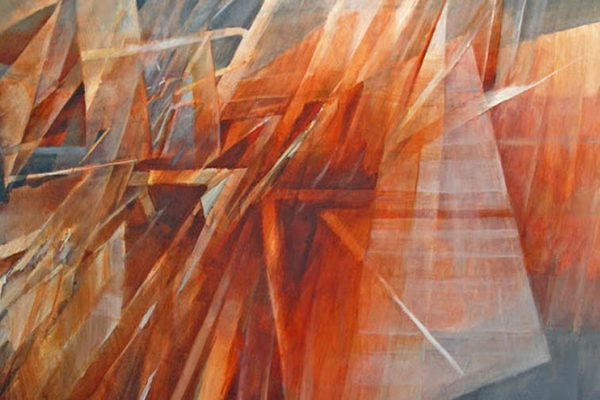
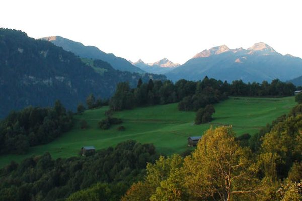
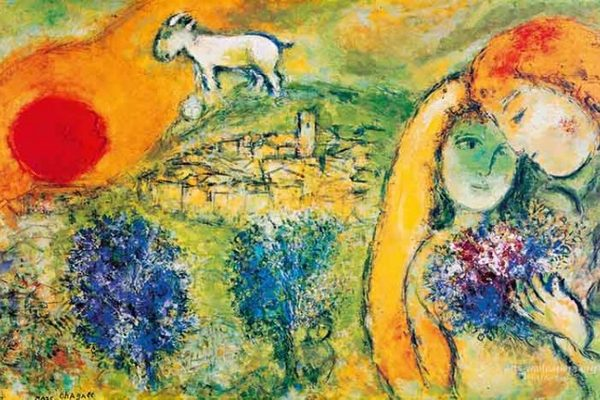
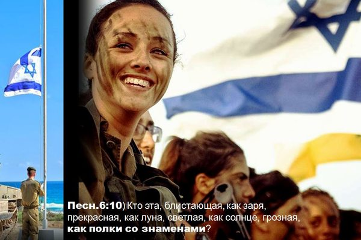

СПАСЕНИЕ и ПРИЗВАНИЕ | Сохранение НАЦИОНАЛЬНОЙ ИДЕНТИФИКАЦИИ в Боге2018 · Израиль и Церковь
СПАСЕНИЕ и ПРИЗВАНИЕ | Сохранение НАЦИОНАЛЬНОЙ ИДЕНТИФИКАЦИИ в Боге2018 · Израиль и Церковь БЛАГОСЛОВЕНИЕ ААРОНА | Зара Оганесян2018 · Израиль и Церковь, Библия и художник
БЛАГОСЛОВЕНИЕ ААРОНА | Зара Оганесян2018 · Израиль и Церковь, Библия и художник АЛЕКС БЛЕНД | Страсти по Павлу2018 · Израиль и Церковь
АЛЕКС БЛЕНД | Страсти по Павлу2018 · Израиль и Церковь Десять ЗАПОВЕДЕЙ / АНОХИ / молитвенное пение2018 · Праздники в Библии, Израиль и Церковь
Десять ЗАПОВЕДЕЙ / АНОХИ / молитвенное пение2018 · Праздники в Библии, Израиль и Церковь ХАСИД, ПРИНЯВШИЙ МЕССИЮ ИЕШУА, о фильме "Новый Дух"2018 · Израиль и Церковь
ХАСИД, ПРИНЯВШИЙ МЕССИЮ ИЕШУА, о фильме "Новый Дух"2018 · Израиль и Церковь Интервью с ЯКОВОМ ДАМКАНИ о худ. фильме | НОВЫЙ ДУХ | О Мессианских Евреях2018 · Израиль и Церковь
Интервью с ЯКОВОМ ДАМКАНИ о худ. фильме | НОВЫЙ ДУХ | О Мессианских Евреях2018 · Израиль и Церковь БЛАГОДАТЬ! КИПУР? Мессианские ЕВРЕИ?2016 · Израиль и Церковь
БЛАГОДАТЬ! КИПУР? Мессианские ЕВРЕИ?2016 · Израиль и Церковь ПОКЛОНЕНИЕ В ИЗРАИЛЕ | Андрей Левин2016 · Израиль и Церковь, Библия и художник
ПОКЛОНЕНИЕ В ИЗРАИЛЕ | Андрей Левин2016 · Израиль и Церковь, Библия и художник
ШОФАР НАД АРМЕНИЕЙ | Зара Ованнисян2016 · Израиль и Церковь Познер и его еврейское счастье2016 · Израиль и Церковь
Познер и его еврейское счастье2016 · Израиль и Церковь Возрождение государства Израиль и древние мозаики синагог2016 · Израиль и Церковь, Артефакты
Возрождение государства Израиль и древние мозаики синагог2016 · Израиль и Церковь, Артефакты За что Папа Франциск любит Марка Шагала?2016 · Израиль и Церковь, Библия и художник
За что Папа Франциск любит Марка Шагала?2016 · Израиль и Церковь, Библия и художник Стоило бросить все, чтобы работать продавцом?2016 · Израиль и Церковь
Стоило бросить все, чтобы работать продавцом?2016 · Израиль и Церковь ТАЙНА АПОСТОЛА ПАВЛА | Израиль и Церковь2015 · Израиль и Церковь
ТАЙНА АПОСТОЛА ПАВЛА | Израиль и Церковь2015 · Израиль и Церковь СУККА и ДИКАЯ МАСЛИНА. Сделать кущу по-написанному2015 · Праздники в Библии, Израиль и Церковь
СУККА и ДИКАЯ МАСЛИНА. Сделать кущу по-написанному2015 · Праздники в Библии, Израиль и Церковь
Йом Кипур. Новая музыкальная версия молитвы2015 · Израиль и Церковь, Библия и художник, Праздники в Библии
Творчество веры. Свой виноградник в Израиле2015 · Израиль и Церковь, Путешествия Израиль и Церковь. ПЕРВАЯ ЛЮБОВЬ2015 · Израиль и Церковь
Израиль и Церковь. ПЕРВАЯ ЛЮБОВЬ2015 · Израиль и Церковь Kinderfresser - ПОЖИРАТЕЛЬ ДЕТЕЙ2015 · Израиль и Церковь, Артефакты, Путешествия
Kinderfresser - ПОЖИРАТЕЛЬ ДЕТЕЙ2015 · Израиль и Церковь, Артефакты, Путешествия
ПОСЛАНИЕ от Марка Шагала2015 · Израиль и Церковь, Библия и художник Будут ДВОЕ - ОДНО. ИЗРАИЛЬ и ЦЕРКОВЬ2015 · Израиль и Церковь
Будут ДВОЕ - ОДНО. ИЗРАИЛЬ и ЦЕРКОВЬ2015 · Израиль и Церковь ИЗРАИЛЬ И ЦЕРКОВЬ - две половины одного сердца2015 · Израиль и Церковь
ИЗРАИЛЬ И ЦЕРКОВЬ - две половины одного сердца2015 · Израиль и Церковь ЕВРЕЙСКИЕ ОБРАЗЫ в творчестве католика Йозефа Регулы2015 · Израиль и Церковь, Библия и художник
ЕВРЕЙСКИЕ ОБРАЗЫ в творчестве католика Йозефа Регулы2015 · Израиль и Церковь, Библия и художник ЕВРЕЙ С МОНЕТОЙ2015 · Израиль и Церковь, Артефакты
ЕВРЕЙ С МОНЕТОЙ2015 · Израиль и Церковь, Артефакты
ШУЛАМИТ. Танец двух ополчений. /Песнь Песней. 7:1/2015 · Израиль и Церковь КАЖДЫЙ оставайся В СВОЕМ ЗВАНИИ2014 · Израиль и Церковь
КАЖДЫЙ оставайся В СВОЕМ ЗВАНИИ2014 · Израиль и Церковь Я - СИОНИСТ! /ко дню Независимости ИЗРАИЛЯ/2014 · Праздники в Библии, Израиль и Церковь
Я - СИОНИСТ! /ко дню Независимости ИЗРАИЛЯ/2014 · Праздники в Библии, Израиль и Церковь ОБРАТИ нас и МЫ ОБРАТИМСЯ!2014 · Праздники в Библии, Израиль и Церковь, Библия и художник
ОБРАТИ нас и МЫ ОБРАТИМСЯ!2014 · Праздники в Библии, Израиль и Церковь, Библия и художник